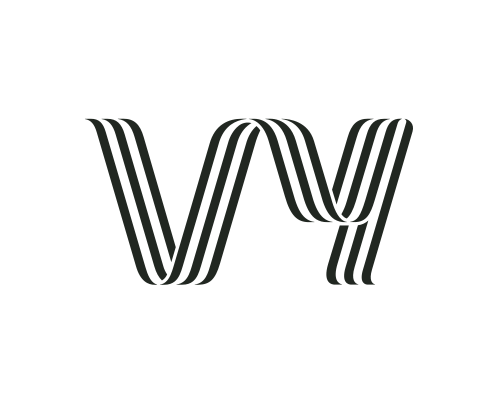
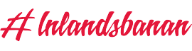

01
Stockholm CGöteborg C
Din resa, samlad.
Välj stationer och resedatum. Hitta din avgång eller lägg till resan själv.
DIN RESA. DIN ERSÄTTNING. 100 % KOSTNADSFRITT.
En enklare väg till ersättning för din vardagsresa.
En app. Flera tågoperatörer.
VI TAR HAND OM NÄSTA STEG.
EN ENKLARE VARDAG
Välj stationer och resedatum. Hitta din avgång eller lägg till resan själv.
Spara dina personuppgifter och biljetter för snabbare framtida ansökningar.
Registrera din försenade resa direkt i appen.
Se dina ärenden och håll koll på statusen på ett ställe.
Inga abonnemangsavgifter. Inga ansökningsavgifter. Inga dolda kostnader.
01 / Vårt löfte
Vi startade Kompensa för att fler resenärer ska få den ersättning de faktiskt har rätt till. Många avstår från att ansöka eftersom processen upplevs som krånglig eller tar för lång tid.
Därför har vi valt att göra Kompensa helt kostnadsfritt. Vårt mål är enkelt – ingen ska gå miste om ersättning på grund av onödig administration
Vi tar inga abonnemangsavgifter eller ansökningsavgifter, och vi kommer aldrig att ta betalt för att du ska kunna ansöka om den ersättning du har rätt till.
Vi vill vara öppna med hur tjänsten fungerar.
För att kunna fortsätta utveckla Kompensa kommer vi på sikt att finansiera delar av tjänsten genom noggrant utvalda annonser och samarbeten. Vårt mål är att annonserna ska vara relevanta, diskreta och aldrig störa din upplevelse.
Det innebär att du kan använda Kompensa utan abonnemang eller avgifter, samtidigt som vi kan fortsätta utveckla tjänsten och göra tågersättning enklare för alla.
Missa inte ersättningen för dina försenade resor.
Klar på några få klick.
Från försening till ersättning.
Allt hanteras säkert i appen.
SÅ FUNKAR DET
Du behöver inte känna till hela processen.
Bara var din resa
började.
Välj stationer och resedatum. Hitta din avgång eller lägg till resan själv.
Logga in, välj biljett och lägg till eventuella utlägg. Granska allt innan du skickar.
Följ din ansökan under Mina ärenden. Operatören granskar underlaget och beslutar om ersättning.
Hej Alex,
Funktioner
Kompensa är din digitala assistent för tågförseningar och inställda avgångar. Appen identifierar automatiskt vilka av dina resor som är ersättningsberättigade och hjälper dig skicka in din ansökan snabbt och smidigt, utan onödigt krångel. Vi lägger successivt till stöd för fler tågbolag och du kan alltid se vilka som ingår under “Operatörer vi stödjer”. Allt sker direkt i appen, oavsett vilket tågbolag du har rest med. Med hjälp av våra smarta funktioner blir processen enkel från start till mål – du klickar, vi fixar resten.
Utforska appen ↗BYGGD FÖR DIN VARDAG
Du väljer start och slutdestination, appen visar automatiskt aktuella förseningar för just den rutten.
Få pushnotiser om nya förseningar baserat på dina valda rutter.
Sparar personuppgifter och biljettnummer/periodkort för snabbare framtida ansökningar.
Vi sparar förseningsdata i upp till 90 dagar, så att du kan ansöka om ersättning även i efterhand
Hos operatören blir det möjligt först efter några timmar.
Appen visar bara resor som är berättigade till ersättning.
TILLSAMMANS PÅ VÄG
Vi arbetar med alla större tågoperatörer i Sverige och Finland. Oavsett vilket bolag du reser med kan du ansöka om ersättning direkt i vår app.
Din resa. En samlad ansökan.
Vy
Tåg i Bergslagen
InlandsbananBRA ATT VETA
Vi arbetar kontinuerligt med att lägga till stöd för fler tågoperatörer.
Berätta vad du behöver hjälp med – Vi är bara ett formulär bort.
Öppna kontaktformuläret ↗DIN RESA. DIN ERSÄTTNING.